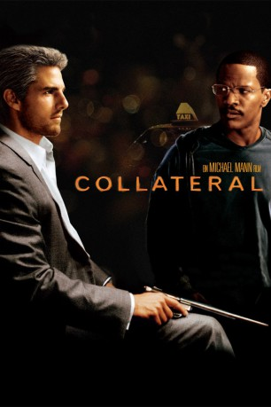
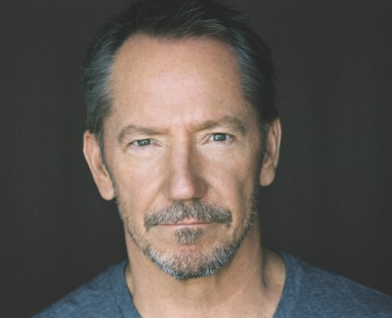
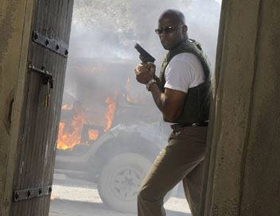
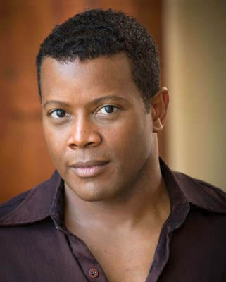

#33 Collateral
Auszeichnungen: für 2 Oscars nominiert 1 BAFTA-Awards gewonnen
 
 IMDB-Wertung: 7.5 / 10
IMDB-Wertung: 7.5 / 10  Metascore: 71
Metascore: 71 
Vincent ist ein cooler, berechnender Auftragskiller und sehr gefragt im Business. Max ist ein Taxifahrer mit großen Träumen und ohne Erfolg. In dieser schicksalhaften Nacht fährt Max Vincent zu seinem nächsten Job – eine Nacht, fünf Stopps, fünf Treffer, eine Flucht. In dieser zufälligen Begegnung prallen zwei Leben aufeinander – und keiner der Männer wird jemals wieder derselbe sein. Heute Nacht wird sich alles ändern.
Jahr: 2004
Dauer: 120 Minuten
FSK: 16
Land: USA Studio: DreamWorks DistributionTonspuren:
Untertitel: Deutsch,
Auflösung: 1080p (1920x800) Größe: 9799 MB
Genre: Krimi, Drama, Thriller
Regisseur:  Michael Mann
Michael Mann
Drehbuch: Stuart Beattie
Soundtrack: James Newton Howard
Darsteller:
 Tom Cruise als Vincent
Tom Cruise als Vincent Jamie Foxx als Max
Jamie Foxx als Max Jada Pinkett Smith als Annie
Jada Pinkett Smith als Annie Mark Ruffalo als Fanning
Mark Ruffalo als Fanning Peter Berg als Richard Weidner
Peter Berg als Richard Weidner Bruce McGill als Pedrosa
Bruce McGill als Pedrosa Irma P. Hall als Ida
Irma P. Hall als Ida Barry Shabaka Henley als Daniel
Barry Shabaka Henley als Daniel Richard T. Jones als Traffic Cop #1
Richard T. Jones als Traffic Cop #1 Bodhi Elfman als Young Professional Man
Bodhi Elfman als Young Professional Man Debi Mazar als Young Professional Woman
Debi Mazar als Young Professional Woman Javier Bardem als Felix
Javier Bardem als Felix Emilio Rivera als Paco
Emilio Rivera als Paco- Jamie McBride als Traffic Cop #2
- Ken Waters als FBI Agent
- Charlie E. Schmidt als FBI Agent
 Michael Bentt als Fever Bouncer
Michael Bentt als Fever Bouncer- David Mersault als Crime Scene Cop
 Thomas Rosales Jr. als Ramone
Thomas Rosales Jr. als Ramone- Wade Williams als Fed #2
 Paul Adelstein als Fed #3
Paul Adelstein als Fed #3 Troy Blendell als Morgue Attendant
Troy Blendell als Morgue Attendant-  Chic Daniel als Plainclothes Cop
- Corinne Chooey als Waitress
- JoNell Kennedy als Waitress
 Roger Stoneburner als White Guy
Roger Stoneburner als White Guy- George Petrina als White Guy
- Auggie Cavanagh als Jazz Musician
- Peter McKernan als Police Helicopter Pilot
- Ivor Shier als News Helicopter Pilot
- Daniel Luján als Rubio #1
- Eddie Diaz als Rubio #2
- Josh Cruze als El Rodeo Band Member
 Jason Statham als Airport Man
Jason Statham als Airport Man- Angelo Tiffe als Sylvester Clarke
- Ron Eckert als Hotel Security Desk Guard
- Luis Moncada als Cold Eyed Killer
- Michael-John Wolfe als Hotel Clerk
 Brandon Molale als Limo Driver
Brandon Molale als Limo Driver- Marianne M. Arreaga als Police Helicopter Co-Pilot
- Niles Roth als Helicopter Pilot
- Danny Del Toro als Cold Eye Killer #3 , uncredited
-  DTeflon als Peter Lim's Bodyguard , uncredited
- Tara Erickson als Supporting , uncredited
-  Jerald Garner als Dancer at Club Fever , uncredited
- Annabella Gutman als Dancer , uncredited
 Mark Kubr als Drug Man , uncredited
Mark Kubr als Drug Man , uncredited- Cameron Lee als Club Dancer , uncredited
- Gino Montesinos als Rubio , uncredited
- Masami Okada als Club Goer at Korean Club , uncredited
Datei: X:\2004(A-F)\Collateral (2004, FSK16, 1920x800).mkv seit 02.02.2015
Festplatte: HD 2003-2004-2005(A-F)
 Es gibt insgesamt 39 Filme in der Gruppe '2004(A-F)'
Es gibt insgesamt 39 Filme in der Gruppe '2004(A-F)'